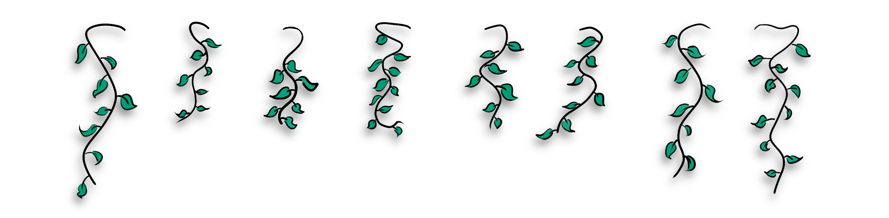
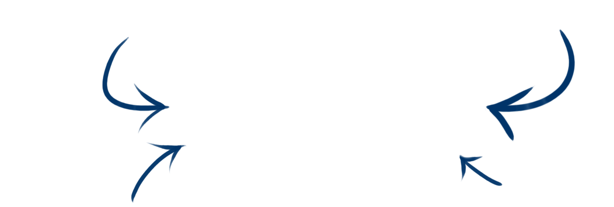

Összeházasodtunk!
Lássuk a képeket.
We are married!
Time to check out the photos.

Profi fotók
Amint a fotósunk, Kóczi elkészül a fotókkal, itt is megosztjuk a linket hozzájuk.
Professional photos
As soon as Kóczi, our photographer is ready with the pics, we'll share the link to them here as well.
Vendég fotók
Ha szeretnétek látni a fotókat amiket mi lőttünk, valamint ha ti akartok megosztani képet, az alábbi gombbal éritek el az albumot.
Guest photos
To see the photos we made, or if you want to share your own, the button below will take you to the group album.
